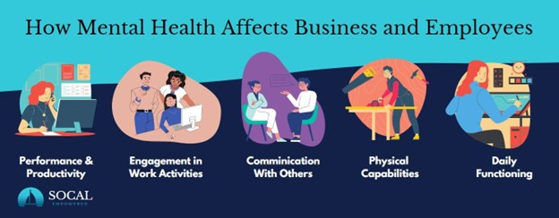

Mental health is one of the largest growing concerns in our nation. Data shows that in the United States, approximately 1 in 5 adults experience some form of mental illness each year, equating to roughly 40 million adults. The most prevalent mental health disorders include depression, anxiety disorders, generalized anxiety, panic, obsessive-compulsive, and post-traumatic stress disorders (Huges 2021). Unfortunately, this trend is likely to continue as recent events have further spurred an increase in the rise of mental health disorders, this includes; recent acts of violence due to racism, the difference in treatment during the COVID pandemic, the increase in housing prices, the murder of George Floyd, and beyond the scope of United States, protests for racial justice in the Israel Palestine conflict (Hughes 2021). These staggering numbers, alongside the trend of increasingly prevalent mental health disorders, imply that this issue is present in the workplace, and likely affects numerous employees. If managers want to have the most productive workspace possible, they must work hand in hand with HR to create a safe and inclusive environment.
In this day and age learning to manage employees suffering from mental health disorders is imperative to operating a workplace at maximum efficiency. The non-profit Mind Share Partners conducted a study and found mental health is a vital factor in workplace productivity, well-being, and engagement. (Wong and Greenwood 2023). The conclusion this study draws is congruent with others, for example, experts at Harvard’s Faculty of Arts and Sciences Diversity Summer Panel determined diversity, equity, and inclusion are about more than just race and culture, it extends to people's mental health and mental wellbeing. Embracing diversity offers support to communities facing harsh and unfair negative stigmas, mental health issues are one of the largest and least-discussed in the workplace. (Huges 2021). Mental health is also a huge monetary issue for employers, organizations spend over $15,000 annually on each employee experiencing mental health issues, making it one of the most expensive healthcare issues. (National Safety Council 2021).
In the US the prevalence of mental health illness continues to fluctuate, during the COVID pandemic mental health symptoms spiked, with workers' overall view on their own mental health declining, while just last year in 2023 there was a 20% decline in those workers reporting symptoms. That being said, when those workers were asked to rate their overall mental health out of 10, 61% rated between seven and 10, with economic worries, and work itself having the largest negative impacts. Additionally, the majority of those suffering from mental health issues also need care for other physical health conditions. This can be especially problematic for a company's insurance, as the costs for treating people with both mental health disorders and other physical conditions are 2 to 3 times higher than for those without co-occurring illnesses (CDC 2019). By combining medical and behavioral health care, the United States could approximately $37.6 billion to $67.8 billion per year.
As stated earlier, mental health illnesses drastically affect employees, which in turn affects the company as a whole, some specific ways they can be affected include;
- Job performance and productivity
- Engagement with one’s work
- Communication with coworkers
- Physical capability and daily functioning
When looking at a specific mental health disorder such as depression it's clear the effect it can have on an employee's ability to work. Depression makes employees unable to complete physical job tasks about 20% of the time and reduces cognitive performance about 35% of the time. Furthermore, these numbers may be underrepresented as only 57% of employees who report moderate depression and 40% of those who report severe depression receive treatment to control depression symptoms (CDC 2019).
Even though mental health is so rampant the majority of employers barely scratch the surface of effective support. Historically, this support primarily centers around a generalized individual approach, such as therapy, or time off. It is essentially forcing the employee to manage their mental health outside of work. This creates an unhealthy environment especially if work is the cause of the mental health issue, this can occur through conditions such as a perceived lack of control, unsustainable workloads, inadequate rewards, lack of community, lack of equality, and poor management (Wong and Greenwood 2023).

Source: Socal Empowered
Because of the increasing prevalence of mental health disorders, change in the work environment is likely soon to follow. This change can come in a variety of forms including; increased awareness, access to educational resources, including mental wellness benefits, encouraging a healthy work-life balance, vocalizing leadership’s support in behavior changes, and continuously tracking engagement to keep the pulse of employee morale. Because mental health disorders are often invisible, they are often overlooked and stigmatized. This stigmatization can be seen through a study conducted by Workplace Options where they found 47% of employees worked at companies with no support or programs, an additional 11% weren't sure what their employers offered, while a mere 47% had support or programs. These suggestions may help curb this stigmatization, but managers will still need to work with their employees to create a healthy and inclusive work environment. They should attend relevant training to learn how to best handle, and approach situations where employees are facing mental health challenges.
Source: Workplace Options
All in all, mental health is on the rise in America, its presence is and will continue to change the workforce, and managers must adapt to this change. As stated earlier, managers have a plethora of ways to help reduce the symptoms of mental health in their employees. This will not only lead to a happier, more stable workforce but also a more productive and efficient one. Managers can start this change as soon as they would like, by starting small with things such as informational videos, or starting large like mandatory training, they will be able to create a safe and inclusive workplace for all their employees.